Transformamos o impacto real da sua marca em narrativas que geram valor no tempo.
Documentários e sistemas narrativos para marcas que desejam construir presença, inspirar confiança e consolidar legitimidade.
Explore
Documentários e sistemas narrativos para marcas que desejam construir presença, inspirar confiança e consolidar legitimidade.
Filmes institucionais soam promocionais.
Conteúdo digital parece fragmentário e descartável.
Organiza o discurso da marca.
Ancora a narrativa no real.
Sustenta um ecossistema consistente de conteúdos.
Um método que transforma a realidade da sua marca em um ecossistema estruturado de conteúdos.
Mapeamos o potencial narrativo da sua marca.
O eixo central, onde a narrativa ganha densidade e legitimidade.
Desdobramento estratégico para campanhas, redes sociais e plataformas digitais.

Documentários de marca
& sistemas narrativos.
Onde o seu material bruto
se torna narrativa estratégica.

Incubadora de projetos independentes
& laboratório de linguagem.
A média de ROI relatada por publicitários que projetam campanhas para documentários de marca (trailers, teasers, bastidores) supera de longe outros formatos de vídeo corporativo.
— Amra & Elma, 2026Dos consumidores dizem confiar mais em uma marca depois de assistir a vídeos com histórias reais.
— Amra & Elma, 2026O documentário de marca é uma das ferramentas mais eficazes para impulsionar consciência de marca: 71%, contra apenas 38% dos vídeos corporativos convencionais na mesma faixa de orçamento.
— Amra & Elma, 2026Mini-documentários oferecem o maior retorno sobre o investimento (ROI) entre todos os formatos de vídeo analisados.
— Think Branded M., 2026O documentário de marca participa cada vez mais das estratégias de comunicação corporativa de grandes empresas, startups de tecnologia e pequenas marcas autorais.
Nossa missão NÃO é fazer vídeo.
É entregar SOLUÇÃO
em
audiovisual.
Se sua marca sustenta um documentário.
Qual regime narrativo
faz mais sentido nesse momento.
Qual estratégia maximiza impacto.